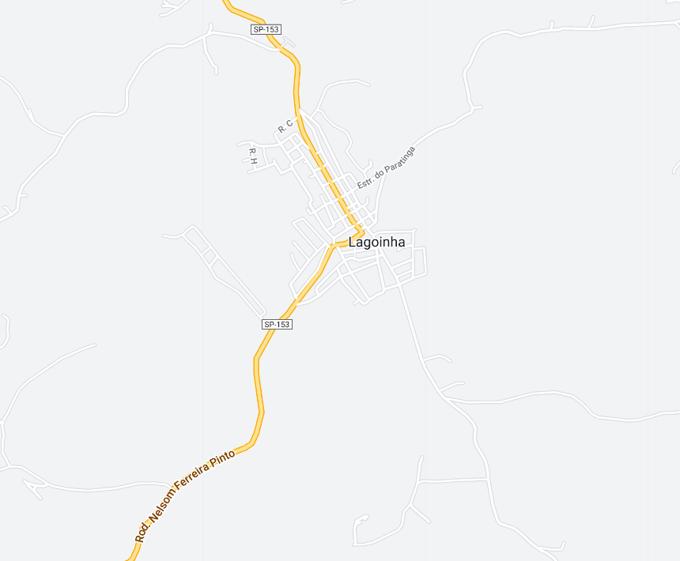

Lagoinha - Geodex

Município de Lagoinha
-
Populacão: 4.882 pessoas
-
Área: 255,472km²
-
Fundação: 19 de Dezembro de 1867
-
Distância da Capital: 192km
Lagoinha é uma cidade localizada no estado de São Paulo, Brasil. Com suas origens no período colonial, a cidade se desenvolveu ao redor de uma pequena lagoa, da qual deriva seu nome. Rodeada por paisagens montanhosas e áreas preservadas de Mata Atlântica, Lagoinha atrai visitantes em busca de tranquilidade e contato com a natureza. A cidade preserva um centro histórico com construções antigas e igrejas, refletindo sua herança cultural. Com uma atmosfera acolhedora e pacífica, Lagoinha é um destino ideal para quem procura uma experiência rural autêntica no interior de São Paulo.